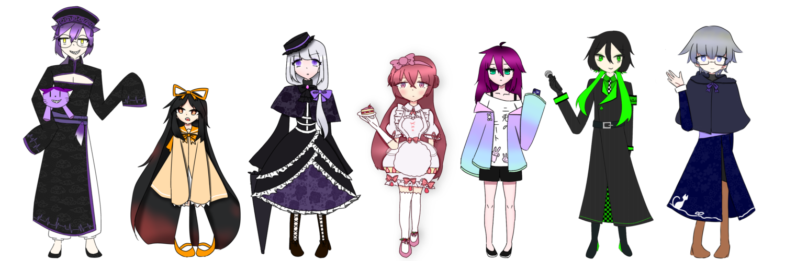
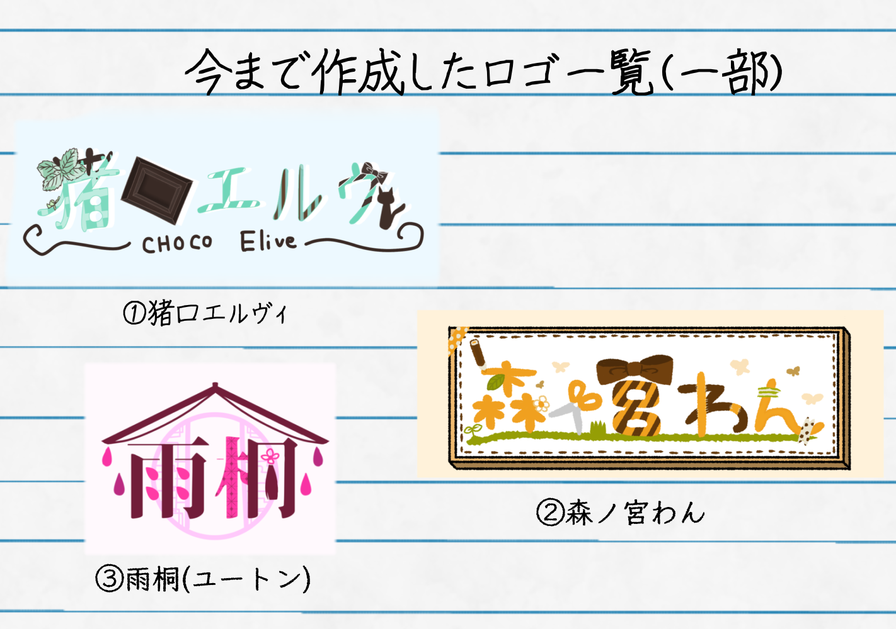

立ち絵

男女年齢関係なく様々なオリジナルデザインで描いています。
線画はさほど変わってないですが、塗りは高頻度で結構変わります。
企画用、TRPG用などなど様々なところで使用しています。
キャラクターの設定もオリジナルです。
キャラクターを作るときは、大まかな設定とテーマを考えるところから始めています。
ロゴ

左の画像は、自身のオリジナルキャラクターの名前を使用しています。
不定期的にこのようなロゴも作っています。Vtuberのようなロゴばっかり、
制作しているのでタイトルやイベントで使えるようなロゴも考えてみたいです。
製作する際は以下のものを考えて作っています。
①ロゴにする名前（タイトルなど）
②入れたい要素・雰囲気（単語でも構いません）
③備考（サイズ指定等）
だいたい雰囲気にあったフォントを仮置きして、そこからだいたいの位置決めや
パーツを付け足し、色置きなどをしています。入れたい要素・雰囲気というのは、
例えば、左の図の①だとテーマは「黒猫」「チョコミント」
②だと「図工」「自然」
③だと「小説」「雨」「中華」みたいな感じに
ざっくりとテーマを決めています。
また、①と②は小柄で可愛らしい雰囲気の女の子、
③は比較的大きめの成人男性という設定なので
①と②は、比較的丸みを帯びた文字、③はすらっとしたような文字にしています。
こんな風にざっくりとでも、雰囲気を固めておくと作りやすいなと感じています。